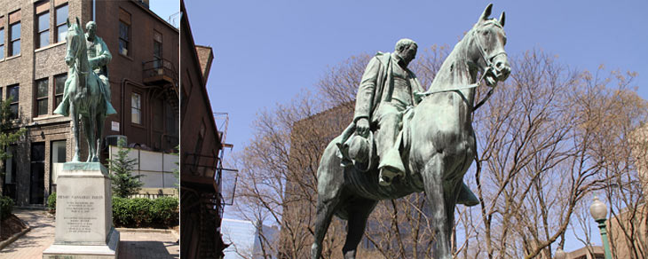

01 Festival Delle Arti - Harry Marinksy
2005 Clay Center, Lee Street and Leon Sullivan WayThe Clay Center seeks works that invite the public to interact with the art. Often one finds children joining in the parade of these six, bronze-cast costumed children. This playful sculpture encourages children to explore creativity and the arts.
02 Hallelujah - Albert Paley
2009 Clay Center, Lee Street and Leon Sullivan WaySixty-four feet tall and forty feet in diameter, this monumental sculpture marks the entrance to the Clay Center, an invitation to explore the arts and sciences within. The form and shapes of the abstract sculpture seem to reference the programs in the building. Could it be a scientific or musical instrument? A tool for a giant to draw the stars? Step back and enjoy the full magnitude of the work or walk inside and experience its soaring height reminiscent of a cathedral.
The artist has completed many works of public art, including the portal gates for the Renwick Gallery of the Smithsonian Institution in Washington, DC. He was the first artist to receive Institute Honors by the American Institute of Architects, the most prestigious award given by the organization to a non-architect.
03 Labac - Arthur Gibbons
1988 Clay Center, Lee Street and Brooks StreetsStanding nine feet tall, this sculpture is formed from several pieces of steel that have weathered to a rich, brown patina. The title holds a secret: it is the word “cabal” spelled backwards, meaning a group of insiders engaged in a plot or intrigue.
The Clay Center was designed by Kiser Straw and Kolodner of Philadelphia, Pennsylvania and Gates, Calloway, Moore and West of Beckley, West Virginia.
04 Charleston Arch - Charles Ginnever
2009 Clay Center, Dickinson and Lee StreetThe artist designed this sculpture so the five flattened hexagons can sometimes seem to appear three dimensional. How does the artist create this optical illusion?
The artist studied sculpture and photography, and is known for the minimalist style presented in this work. In 1999, Ginnever received the Lee Krasner Foundation Lifetime Achievement Award.
05 Man Wrests from the Earth- Milton Horn
1968 Dickinson and Lee streetBorn in Russia, the artist immigrated to the United States in 1915. He completed many public artworks across the country. This high basrelief represents the artist’s signature style of allegorical sculpture using figures and objects to tell stories or convey meaning. What story is he telling here?.

06 Henry Gassaway Davis
1926 Capitol and Lee StreetsDavis was a Senator from West Virginia from 1871-1883, as well as the Democratic candidate for Vice President in 1904. Before his political career, he was a brakeman for Baltimore and Ohio Railroad, later founding the Potomac and Piedmont Coal and Railway Company. Another cast of this sculpture is located at Davis and Elkins College in Elkins, West Virginia.
07 The Trombonist - Mark Blumenstein
1988 Clay Center, Lee Street and Brooks StreetsDavis Park was originally designed by Alice Recknagel Ireys, a prominent landscape architect who completed more than 1,000 projects in her lifetime. One of her most famous landscapes is the Fragrance Garden at the Brooklyn Botanical Garden in New York City, a model for designing gardens for people with disabilities.
Across the street from the park at 800 Lee Street is the Kanawha Valley Building. It was built in 1929 as the Kanawha Valley Bank. Designed by architects Alfred C. Bossom and associate architect Charles A. Haviland, it was Charleston’s tallest building for fifty years.
08 Sulptural Bike Racks - Various Artists
2011 Capitol Street, Capitol Market, Haddad Park, Lee Street TriangleCharleston’s collection of creative bike racks result from a call for proposals organized by FestivALL Charleston, the city’s annual art festival. They asked artists to submit ideas to blur the lines between street furniture and sculpture. Structural Systems worked with all of the artists, except blacksmith Jeff Fetty, to translate their two dimensional drawings into three dimensional, functional bike racks.
09 Fountain Sculpture - Robert Cronbach
2009 Kanawha County Public Library, 123 Capitol StreetThe artist designed the bronze sculpture and the fountain when the library renovated this former federal building in 1966. What elements of the building inspired this work? What do the shapes of the sculpture resemble? The artist also designed sculpture and fountains for the United Nations General Assembly Building in New York.
10 Mortar Man- Joseph Mullins
1968 Between 110 and 112 Capitol StreetThe artist sculpted this whimsical, diminutive figure during a creativity break while perched on a scaffold. Using mortar left over from the lettering on the building’s façade, he created this two inch tall figure that has a fan club in Charleston and beyond.
11 Unity - Vladimir Smirnov and Dr. Cubert Smith
1998 East End of Haddad Riverfront ParkCreated through the collaboration of two artists: Smith, of Charleston, and Smirnov, from Russia, the sculpture’s title refers to Charleston’s relationship with its sister city Korolyov. West Virginia was home to Chuck Yeager, the first to break the sound barrier, and rocket boy Homer Hickam. Korolyov is well known as the cradle of Soviet and Russian space exploration. The city is named for Sergey Pavlovich Korolyov, the father of the Russian space program. Since 1997 Korolyov has hosted the International Space Olympics, an annual competition for young people to promote space related research.
12 Paint on brick - Bart Davies
2009 One Bridge Place, Dickinson Street FacadeThe houses on the side of this building only seem real. They were created in the “trompel’oeil” painting style, which translates to “deceive the eye” from French. Locals call this the “San Francisco Mural,” referring to the architectural style of the houses.
This building was designed by architects Yost and Packard for the Lewis and Hubbard Company in 1898.
13 From the Fullness of the Earth - Robert Erle Martens
1941 Boulevard Tower, 1018 Kanawha Boulevard East at Leon Sullivan WayAfter studying at the Cranbrook Academy of Art, Martens attended Yale University to study architecture, and later formed the firm Martens and Son Architects with his son Walter. He served as President of the West Virginia Board of Architects. The architect commissioned himself to make this artwork as well as this structure, known as the Union Carbide Building.
14 The Annunciation and Tree of Life - John Collier
2008 Sacred Heart Co-Cathedral, Leon Sullivan Way and Virginia StreetTwo religious figures reside in the landscaped lot across from Sacred Heart Co-Cathedral in The Annunciation, the Angel Gabriel, standing on a tree stump, and the Virgin Mary, standing next to a fig tree. Tree of Life is the artist’s interpretation of the crucifixion of Jesus Christ.
Leon Sullivan Way has some of Charleston’s most outstanding sacred buildings. Saint John’s Episcopal Church, at Quarrier Street, is on the National Register of Historic Places and was designed by Warne, Tucker, Silling and Hutchison, Pursell, Isaac.
15 Aspirations - Alfred Kloke
1984 500 Virginia Street at Laidley StreetThis sculpture located in the plaza in front of the United Center is a tall, vertical, abstract piece that serves as the fountain’s focal point. The landscape was designed by noted landscape architect and author William H. Whyte with M. Paul Friedberg and Partners. The sculpture sits in front of a modernist office building designed by Odell and Associates.
16 Cabriole - Jimilu Mason
1980 300 Summers Street at Lee StreetCabriole is a wonderful example of a sculpture capturing a moment in time. The three male figures depicted here are performing a cabriole, an advanced ballet jump. During the leap, a dancer moves both calves together in the air with a quick, scissors-like motion. The dancers seem frozen in this explosive movement.
The sculpture is located at the entry to the BBT building, designed by the Houston architecture firm Wilson, Morris, Crain and Anderson in 1976, who also designed the Astrodome.
17 Saint Francis of Assisi - W.D. Hopen
1988 Clay Center, Lee Street and Brooks StreetsSaint Francis lived from 1186- 1226. Known as the patron saint of animals and the environment, he is usually depicted with creatures. Here he holds a bird and a squirrel.
18 Elk Delta - Jim Sanborn
1980 Charleston Civic Center, Clendenin and Lee StreetsCommissioned as a gateway to Charleston, the artist uses bisecting planes of different materials to create an architectural space. Walk through the sculpture and notice how it feels like you are in a series of rooms. The artist has completed many public art commissions, including a sculpture containing a code at the Central Intelligence Agency’s building in Langley, Virginia that has taken more than twenty years to decipher.
19 Starburst - Linda Howard
1994 Charleston Civic Center, Quarrier Street and Civic Center DriveThis sculpture almost appears to be a drawing, or perhaps a complicated piece of origami, made from aluminum tubes.

20 Home Is Where the Art Is - Various Artists
2008 301 Piedmont RoadThis mural, commissioned by Habitat for Humanity of Kanawha and Putnam County, transforms the Re-Store parking lot into a vibrant place. The artists used the concept of home as inspiration.
From left to right the artists are: Andy King, Charles Jupiter Hamilton, Kelly Osborn Huffman, Amanda Jane Miller, youth from the East End Family Resource Center led by Rick Goosman, Mark Wolfe, Amy Williams, the advanced art class of Charleston Catholic led by Rebecca Burch, and Dane Klingaman.